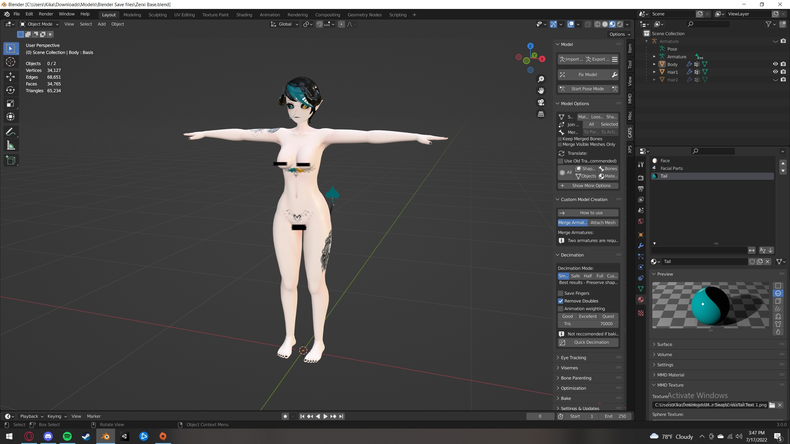

Opening blender and finding our desired base
My first step is opening blender and finding the base/model I'd like to add a new outfit to, in this case we're going to be using the Zerxi base.
Saving our file as name.blend(whatever name you want in place of name)
My second step is saving my file as whatever I'd like to name it, in this case it'd be Zerxi Maiden.blend
.png)
Finding an outfit
My third step is heading to any of the sites I use to find the outfit I want to work on, in this case I'll be using my favorites folder on DeviantArt
.png)
We'll be using the first outfit we see on this page
.png)
Importing our outfit into our blend save
Now for our fourth step we head back over to our desired blender save, Zerxi Maiden.blend and we import our outfit using CATS blender plugin!
.png)
Converting our xps armature to an fbx armature
Our fifth step is converting our xps armature into an fbx armature, to make posing and such easier in the long run. I did have an issue with this so the images past this point might not match up!
.png)
The image above is our pre-converted armature, I know it looks like a porcupine hit it right now but I'll fix that later!
.png)
This is our converted armature now, you can see how different our "porcupine quills" look! Signaling that it is now an FBX armature :)
Deleting all of the unwanted stuff on our mesh! (The body)
Our sixth step is deleting whatever wont be going on our base, I usually delete all the skin/hair and any human body parts, leaving only the clothes.
.png)
And here we have our mesh without all of the unwanted parts!
.png)
Reposing our armature to fit the base better before refitting!
Our seventh step is reposing, using pose mode in CATS to make sure all of our parts align and fit well enough that we can start editing later on! (this is an image that wont match up, our armature is still pre-converted as I was having issues!)
.png)
And here is what it looks like after posing!
.png)
Merging our vertices by distance
Our eigth step will be merging our vertices in our outfit by distance, so later when we edit them they wont pull apart when we use our move by connected!
.png)
Fitting our outfit mesh to our base!
I wont be able to show our ninth step in detail, but you'll get the jist once you see! For this we'll be going into edit mode and fitting our outfit to our base, just so we dont have any clipping.
.png)
Compared to this image the differences in what we did really show!
Using a modifier to transfer weight painting!
For our tenth step we'll be using a data transfer modifier to apply weight painting onto our outfit from our body, using vertex data and nearest face interpolated, and pressing generate layers and applying it!
.png)
Merging our materials for optimization and ease of use!
For this step we'll be merging our materials, combining any ones that use the same texture unless they need to be transparent in unity! Which you can see on the right.
.png)
And we're finished!
I posed it so you can see the weight painting in action, moving our outfit with our body!
.png)